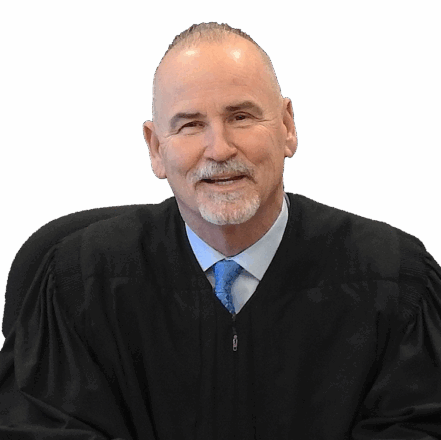

Section 1
 Larry Kransner
Larry Kransner
Larry Krasner has been Philadelphia District Attorney since 2018, having been first elected in 2017 and reelected in 2021. In 2017, Krasner was part of a headline-grabbing wave of large-city progressive / reformist district attorneys, championing more justice for and less policing of Black and Brown bodies. Krasner is one of few of those DAs still in office.
Number of votes 76.10
Sction 2
 Pat DuganPat Dugan seems the definition of a RINO — Republican in name only. The lifelong Democrat, Philadelphian and military veteran resigned from the bench to run against incumbent District Attorney Larry Krasner in the May 2025 primary. Although Dugan garnered strong union support, he lost to Krasner.
Number of votes 23.78
Section 3
 Christy Brady
Christy Brady
Christy Brady was elected City Controller in 2023, after the departure of Rebecca Rhynhart, who resigned from the post to run for mayor. A lifelong Philadelphian, Brady is a CPA who has spent her entire 30-plus year career in the office.
Number of votes 86.25
Section 4

Candidate did not have a website to link !
Northwest Philadelphia native Ari Patrinos has an impressive resume: Harvard graduate with a master’s in political science from the University of Chicago, and Wall Street stockbroker. He says he’s running to help the City provide “basic services” like clean streets and quality public schools. Patrinos wants to help the City recruit more highly qualified workers and Philadelphia tax rates — not traditionally the purview of a comptroller, but, as recent Controllers have shown, the job can be a bit of what you make it